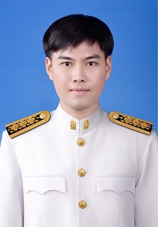

โครงสร้างคณะผู้บริหาร

นางสาวน้ำผึ้ง ทวีสุข
รองผู้อำนวยการกลุ่มงานบริหารวิชาการ
โทร: 08x-xxx-xxxx | อีเมล: director@school.ac.th
รองผู้อำนวยการและหัวหน้ากลุ่มงานบริหาร

หัวหน้ากลุ่มงานบริหารวิชาการ
นายกรณ์พงศ์ พัฒนปกรณ์พงษ์

นายทะเบียน ปีการศึกษา 2567 - 2569
นายณัฏฐกิตติ์ โพธิ์พุ่ม
- ครูที่ปรึกษาระดับชั้นมัธยมศึกษาปีที่ 2/10
- วิชาที่รับผิดชอบสอน ภาคเรียนที่ 1 ปีการศึกษา 2568 อ22101 ภาษาอังกฤษ 3 (ม.2/2, ม.2/10) อ30201 ภาษาอังกฤษฟัง-พูด 1 (ม.4/2, ม.4/8, ม.4/9) อ33101 ภาษาอังกฤษ 5 (ม.6/2, ม.6/6, ม.6/9) ภาระงานระบบ SGS ภาคเรียนที่ 1 ปีการศึกษา 2568 ตรวจสอบความถูกต้องผลการเรียน บันทึกยืนยันความถูกต้องของคะแนนเต็ม จัดห้องเรียน ลงทะเบียนวิชาเรียน ดูแลภาพรวมของระบบ อนุมัติจบการศึกษา ออกหลักฐานทางการศึกษา
รองผู้อำนวยการ กลุ่มงานบริหารกิจการนักเรียน
นางสาวประกายดาว ชุมภูบาง
- **หัวหน้ากลุ่มงานบริหารงานกิจการนักเรียน:** นางสาวอังคณา ดวงเกตุ
รองผู้อำนวยการ กลุ่มงานบริหารงานบุคคล
นางปานใจ ภัทรสุวรรณกิจ
- **หัวหน้ากลุ่มงานบริหารงานบุคคล:** นายไชยพร แย้มมี